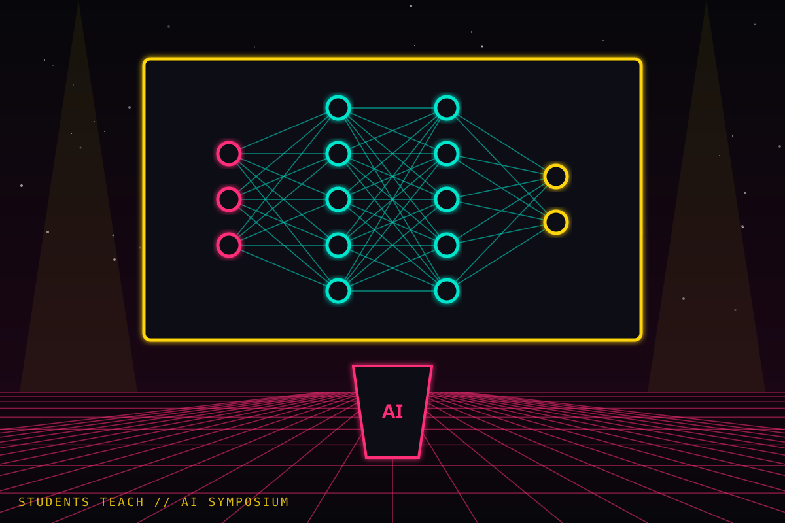

Six ground rules.
Learn the skill first
Binary, the command line, a packet’s path, a first program: students do it by hand before any AI helps.
Confirmed, busted or plausible
Students design tests for what AI tools claim and report what the evidence shows, uncertainty included.
No paid account required
Nothing graded depends on a commercial AI account. Students learn what they give away when they type into a chatbot.
Scams, deepfakes and verification
Every AI student practices spotting scams and deepfakes, verifying what AI says, and making responsible decisions.
Compete on what you know
CyberPatriot rounds run without AI. Students bring their own skills and the guides they built.
Run the models ourselves
Open models run on lab hardware, so students can see how they work and test them safely.
Use, iterate, verify, disclose.
- UseTry the tool on a real task.
- IteratePush back, refine, try again.
- VerifyCheck it against real evidence.
- DiscloseSay how AI helped.
Our models, our hardware.
Raspberry Pis and an NVIDIA Jetson edge AI computer run open AI models inside Chatty Hackville. The Jetson came from a program fundraiser.
- See what a model actually is: a file, running on a chip you can touch.
- Practice attacks like prompt injection on our own models, not someone else’s product.
- Student conversations stay on lab hardware.
Four ways to study AI.
Future Technologies: AI
Build, test, and evaluate generative AI tools. No coding required. ACC college credit: CIS 1068.
ACC PHI 1030Philosophy & Ethics of AI
Debate what AI should and shouldn’t do.
Math DepartmentData Science
Analyze and model real-world data. Algebra II or Algebra II Honors (C or better).
Cyber pathwayAI security in the lab
Red-team chatbots safely on local models in Chatty Hackville.
Students teach.
Future Technologies: AI ends with students teaching what they found. At the Chatfield AI Symposium, students run the introductions and lead breakout sessions for classmates, staff, families, community members and industry guests.
See this year's student AI projects →
When: [date, time and place]
Guests and partners: [how to RSVP]

Questions about AI.
Does my student need to pay for an AI account?
No. Nothing graded depends on a commercial AI account.
Will students just let AI do their work?
Students learn the skill by hand first. When they do use AI, they iterate, verify what it says against real evidence, and disclose how it helped.
What do students learn about staying safe?
Spotting scams and deepfakes, checking whether an AI answer is true, protecting their privacy, and making responsible decisions about when to use AI at all.
Do students need to know how to code?
Not for Future Technologies: AI. It is a Level 1 course with no required coding. Students who want to code can go further in the Computer Science pathway.